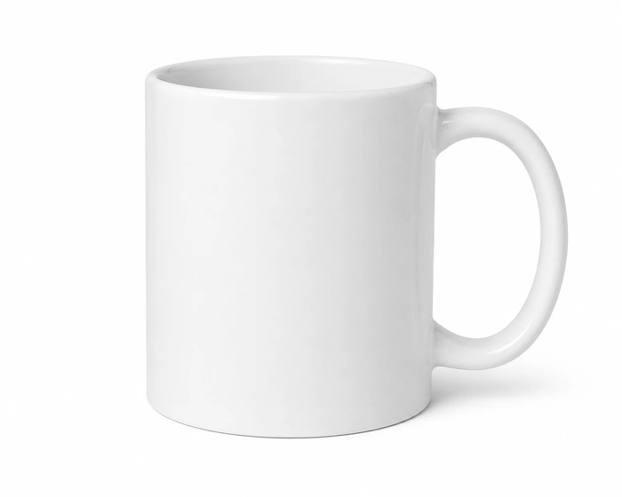
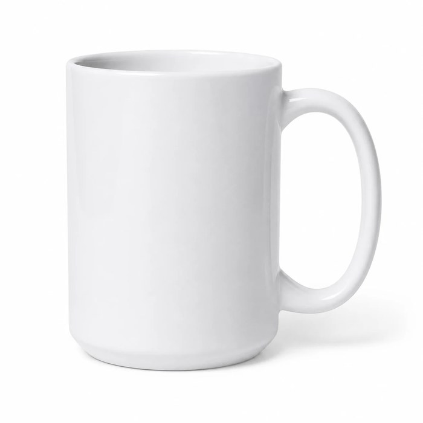
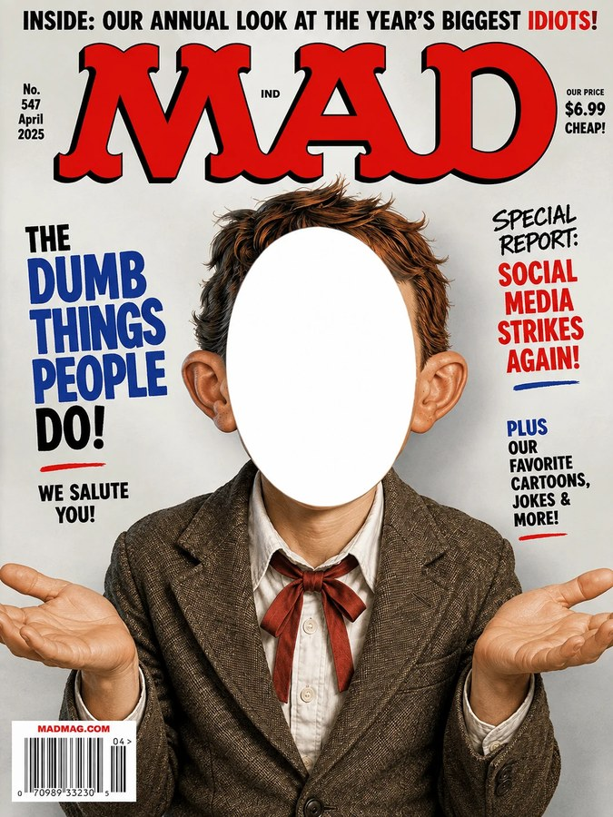
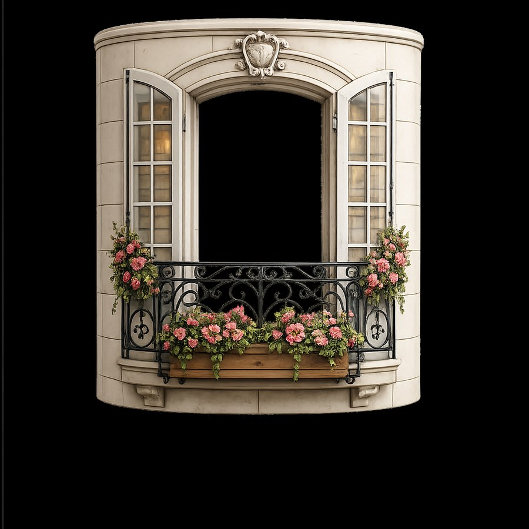
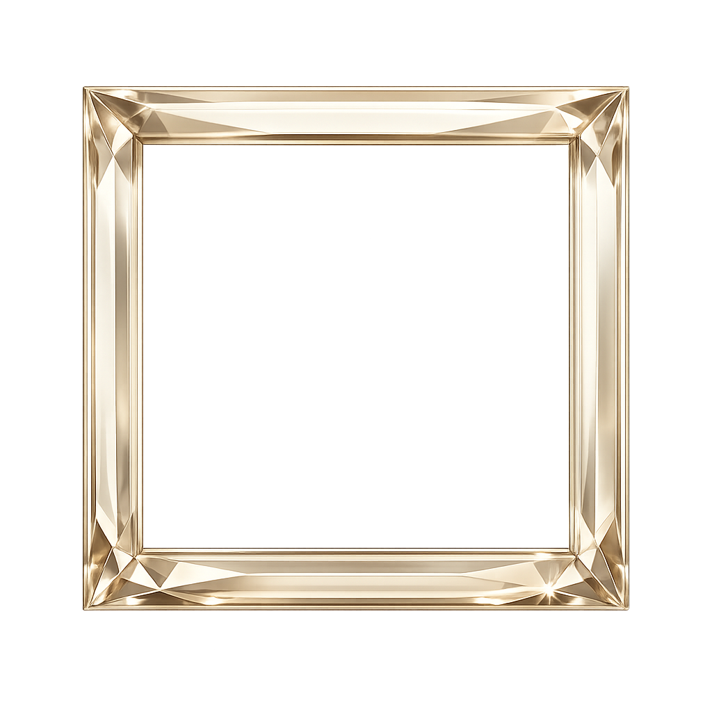
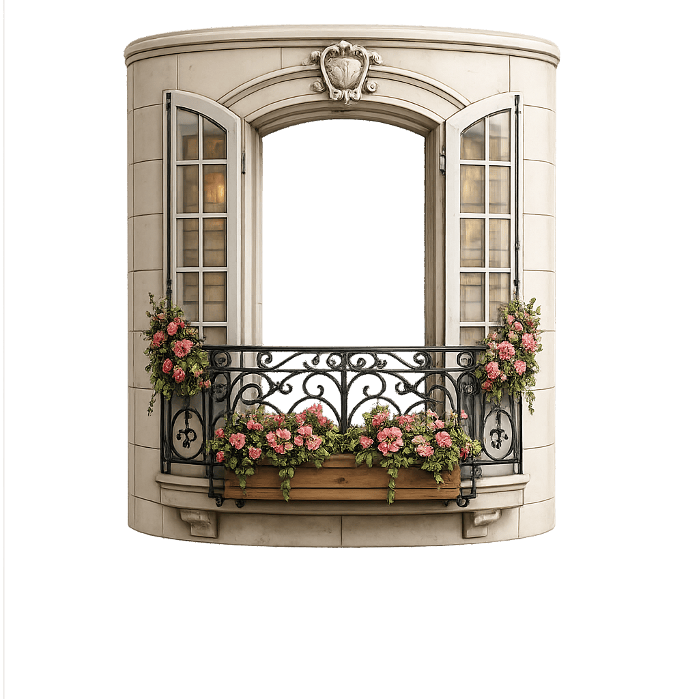

That $5 isn't an extra charge — it comes straight off your product's price at checkout, and unlocks more tokens right away so you can keep creating.
Just want to play? Buy tokens directly — no purchase required.
One more shot — perfect if you know exactly what tweak you need.
A few more tries to get it exactly right.
A couple hours of creative fun — use them however you like, no purchase required.
Style
11oz
15oz
Classic White
$14.95
$16.95
Trimmed
$17.95
$19.95
Accented
$17.95
$19.95
Color Pop
$19.95
$21.95
Prices shown are for the mug itself — shipping and handling is calculated and added at checkout.
🎨 Spins are cheap — 3 for $1 (even less when you buy in bulk). And here's the thing: you don't have to buy a mug or anything else to get value here. Every picture you create — you, with anyone, doing anything you dream up — is yours to keep, save, and share. The image itself is the product.
⚠️
🎨
YOUR HONEY. OUR FUNNY.
📸 Upload Photo
Photo 1
👤
Tap here to upload a photo
Clear face photo works best
➕
Add ref
➕
Add ref
Optional! Pin extra reference photos above if you want to combine or pull elements from other pictures (e.g. "use the face from one on the body in the other"). If not, no biggie.
TRACK 1
TRACK 2
Needles is working on it...
Trying again uses one more token. Need more?
← Choose a different prop← Describe it instead
Trying again uses one more token. Need more?
← Choose a different prop← Describe it instead
Trying again uses one more token. Need more?
← Choose a different prop← Describe it instead
Are you satisfied with this design?
Saving your finished design...
Another go costs one more token. Need more?
Made your changes? Scroll down and hit Generate again. Running low on tokens? Tap Credits & Extras to top up.
PLEASE SELECT ONE OF THE ABOVE OPTIONS!
👀 Live Preview
Updates instantly as you click through frames and window sills below.
🖼️ Frame
Optional — pick a frame to add around your finished artwork now, before you generate, so you don't lose track of it later. Applied automatically once your design is ready. Leave blank for a clean, unframed look.
🪟 Don't see what you're looking for? Window Sill Portrait is also available — just below!
Drag right if the frame's ends are still getting cut off in the final mockup; drag left if there's a visible gap before the frame reaches the edge.
🪟 Window Sill Portrait
A specialty option, separate from Frame — this is one specific pose: you (or someone you choose) standing at a window, coffee mug in hand. Not for action shots, landscapes, or general artwork — just that one cozy scene, in the style below. Optional, and can't be combined with a Frame.
🪟 Preview & Fit Your Photo
This is your actual uploaded photo, not a generated design — use it to see roughly how you'll sit inside the window before spending a token. The size and position shown are already dialed in and ready to go — only touch the sliders if this specific photo needs a nudge.
—
—
—
—
Window Frame Size (adjusts the balcony artwork itself, not your photo)
—
—
📱 Which Phone Model?
We need this before generating, so your art gets composed to fit your exact phone case shape — no cropping surprises later.
Type in your phone model, then press Enter.
Is this correct?
🧩 How Many Pieces?
We need this before generating — each piece count is a different physical puzzle with its own print size and price, and your art gets composed to fit it exactly.
96 pieces
$39.95
252 pieces
$38.95
500 pieces
$43.95
1000 pieces
$43.95
🧳 Which Suitcase Size?
We need this before generating — each size is a different physical case with its own price, and your art gets composed to fit it exactly.
Small
$169.95
Medium
$194.95
Large
$214.95
🖌️ Edge Fade
By default, every design's outer edges automatically fade into white so it blends into the mug instead of looking like a hard-edged sticker. In Wraparound mode, the seams where Left, Center, and Right join stay sharp and continuous — only the true outer edges (top/bottom, plus the far-left and far-right ends) fade. In the standard three-panel mode, each panel is independent, so all four of its edges fade. Doesn't change anything you see or type below; it's applied automatically behind the scenes.
💬 Tell Us Your Idea
⚠️ PLEASE REMEMBER TO SHOW ALL TEXT AND/OR CAPTIONS YOU WISH TO HAVE INCLUDED WITH YOUR IMAGE INSIDE QUOTES " "!
Paint us a clear picture — the more detail you give us, the better our chances of getting your exact idea right.
Tell the artist what you have in mind.
(Optional) Add a costume, outfit, hair, or companion — or just upload your photo and we'll take it from there.
Click here when you are satisfied with your descriptive requests for the image.
🎁 Product
Please select your desired product below when ready.
☕Mug
💌Card
🍶Travel Cups
📝Post-it
📱Phone case
👜Tote bag
🧳Suitcase
🧩Puzzle
🖼️Photo/Poster
☕Coasters
🖱️Mouse pad
☕ Coffee Mug Size
Pick your size first — this determines the price for every style below.

11oz

15oz
🎨 Coffee Mug Style & Color
Pick a size above to see pricing for each style.
Color
☕ Mug Print Style
Coffee mugs (and travel mugs) can be printed two ways — pick before you generate, since it changes how the artwork is composed.
🔲🔲🔲Up to Three Panels
Left, Center, and Right can each be a completely different picture — use as many or as few as you like.
or
🌀Wraparound
One continuous picture that wraps all the way around.
Would you like to try out some of our fun props?
◆
◆ Click on one for more options. ◆
Tell Needles what you have in mind
Describe your idea for us in the box above.
Let's Just Face It
It was always just a matter of time.

Cover Me
Your face, on the cover of a real magazine.

Home Sweet Home
Coffee in hand, greeting the neighbors.
This design method is still being built — check back soon! In the meantime, try one of the other props, or decline them and describe your idea instead.
📰 Cover Me
Pick the magazine you want to make headlines on.
Tap your photo above to use a different one.
If there's more than one person in your photo, describe below which one you want us to replicate.
🎭 Let's Just Face It
Pick the scene you want your face on.
Tap your photo above to use a different one.
If there's more than one person in your photo, describe below which one you want us to replicate.
For best results, use a photo where you're turned slightly to the side (a 3/4 angle) rather than facing the camera head-on — it gives the artist's rendering the most natural depth and light.
Your words
🪟 Good Morning Mugs
Pick the window you want your photo looking out through.
Tap your photo above to use a different one.
SELECT THE PANELS
WHERE DO YOU WISH TO PLACE YOUR IMAGE?
At least one panel needs an image before you can continue.
🖼️ Would you like to select a frame to border your image?
Optional — applied to your finished design(s) automatically.
Change Props
🖼️ Choose Your Frame
Frame Color
🖼️ Fancy A Frame?
Select a frame style and color to create your masterpiece.
Frame Color
← No frame after all
🍶 Which Travel Mug?
Pick which travel mug you're getting before generating — the shape and print layout differ enough between them that we need this locked in first.
🎨 Travel Mug Color
Optional — pick your mug color now so the automatic edge fade can match it exactly, instead of assuming white. You can still change this later.
🖼️ Photo/Poster Options
This is the one product where you pick everything BEFORE generating — the exact shape of your print determines how the artwork gets composed, so getting this locked in first means no cropping surprises later.
Size
Orientation
Vertical
Horizontal
👜 Which Tote Size?
We need this before generating — each size is a different bag with its own price, and your art gets composed to fit it exactly.
13" x 13"
$23.95
16" x 16"
$24.95
18" x 18"
$25.95
👜 Tote Bag Color
Pick your tote color — the automatic edge fade matches it exactly, and each color is a different bag we have to order by name.
🎨 Style
🦝 Muggshotz Classic
📷 Photorealistic
💥 Comic Strip
✏️ Line Art
🎭 Degree of Caricature
😊Lifelike
😄Balanced
🤪Wild
If satisfied with all selections, press "Generate." If not, feel free to scroll back up and make any additional changes.
Requires at least 1 token to generate.
🎉 What's Next?
Please wait while your mock-up is being generated...
🧵 Fix the Seams?
If you see a thin line where the panels meet, drag these until it disappears.
Reveals more of the top AND bottom at once (instead of just panning) -- shrinks the subject a bit to make room. Use this first if Vertical alone can't fit both edges in.
Please wait while your panoramic image is being assembled...
🎉 Your Finished Artwork
One more choice before we add any frame — how should the edges look?
How far should the fade reach in from the edges?
30%
🌫️ Edge Fade
Fade softens the outer edges of your picture so it settles into your product instead of sitting on it like a sticker. It melts into the colour of whatever you're printing on, so the edges simply disappear. This is how every Muggshotz design looked before we had frames and props — and on anything but white, it still looks best.
Drag to set how far the softening reaches in. All the way left is no fade at all: hard, sharp edges.
SharpSoft
30%
🖼️ Design Your Product
Happy with just this one picture? We'll gladly take you to checkout. Want to try a few more designs first? If you're out of free tokens, a $5 Preview Reservation unlocks more tokens to keep creating — that $5 isn't an extra charge, it comes straight off your product's price at checkout. Whatever you end up with, your exact total (including any charge for extra printed designs, or an image on both sides) is always shown before you pay.
⏳ Please Stand By While Panoramic Panels Are Being Completed
🖼️ Add a Frame?

Select a Frame?
or

Select a Window Sill?
Pick a Frame or Window Sill above and try as many combinations as you like — nothing is saved until you tap Satisfied below.
Stretch or reposition the frame's opening to fit your picture exactly how you want.
Pick a style below — the real photo preview updates to match, so you can see exactly what you're getting before you decide.
If all desired changes have been made, click Continue to Order button below.
Style
Size
11oz
15oz
Color
Color
🖼️ Real Photo Preview
Loading your real mockup preview...
Swipe to see all angles Printify photographed — one may show a blank side if your design doesn't cover it.
Tap Left, Center, or Right under a design to place it.
🎁 Get a Second Free Token
Verify your email and we'll send you another free token to keep creating. We check that it's a real, working address — this keeps one bonus token per person fair for everyone.
✏️ Add a Caption
↺ Reset to Default
Stout
Demanding
Drippy
Retro
Doodle
Wacky
Casual
Elegant
B Bold
I Italic
Text Path
➖ Straight
🌙 Quick Arc
✏️ Draw Path
Drag left for a downward arc (smile), right for an upward arc (frown), center for flat.
Draw one line for a single flowing caption, or draw several separate lines (lift your finger between each) to stack words — line 1 gets the first word, line 2 gets the second, and so on. Don't worry about a perfectly steady hand — it gets smoothed automatically.
↩️ Undo Last Line
🗑️ Clear All
Outline
Effect
🚫 None
🌑 Drop Shadow
✨ Glow
Gold
Silver
Chrome
Pearl
Diamond
Money
⬆️ Top
➖ Middle
⬇️ Bottom
Top/Middle/Bottom presets center the caption horizontally at that height. Use the grid above for fine corner control.